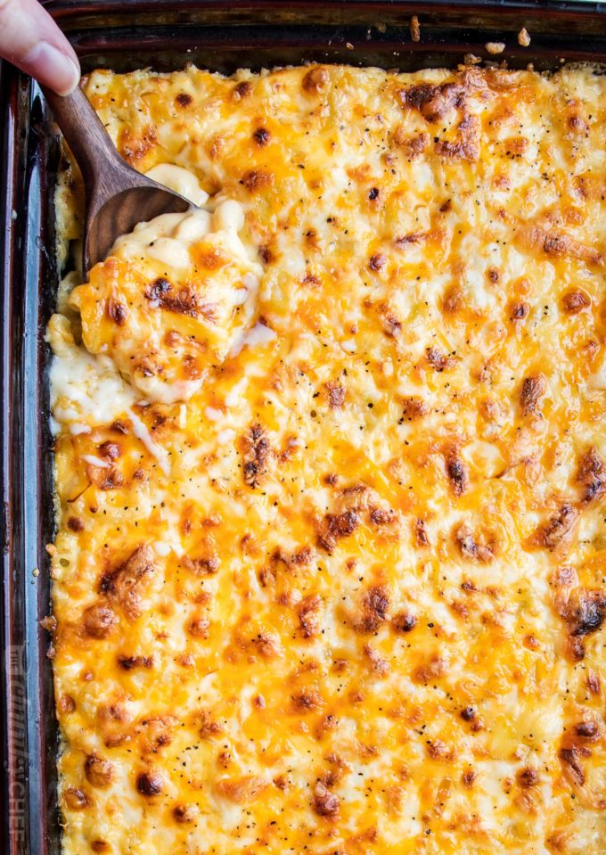

Return to main page
Creamy Baked Mac & Cheese

Ingredients:
Steps:
- Boil the pasta, drain
- Make the cheese sauce by combining a fat (butter), and starch (flour), then whisking in the milk products.
- Cook the sauce until it’s nice and thick.
- Add in shredded cheeses, stir well.
- Combine cheese sauce with cooked pasta.
- Transfer half of the mac and cheese to a baking dish, sprinkle with more shredded cheese.
- Top with the rest of the mac and cheese, top with more shredded cheese.
- Bake and prepare to thoroughly enjoy!